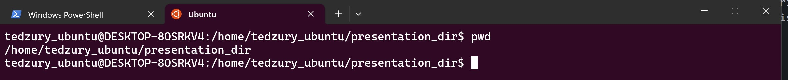
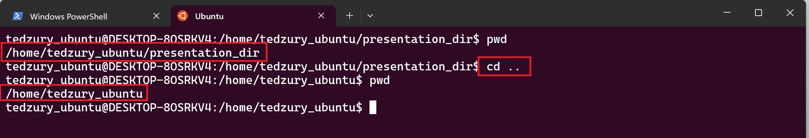
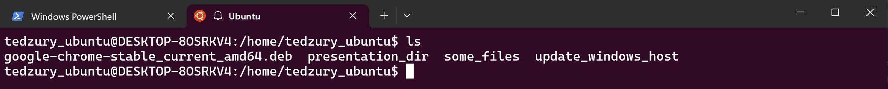
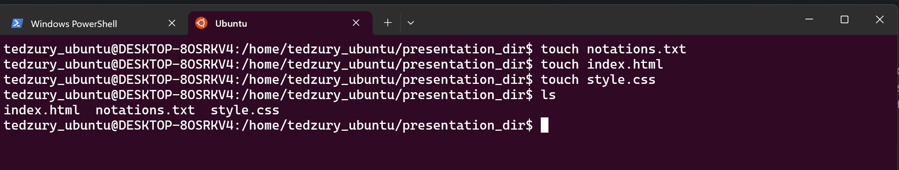
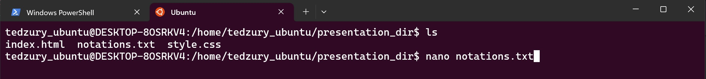
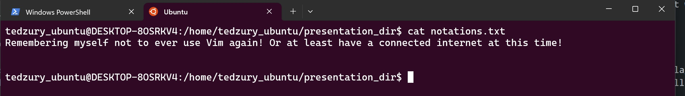
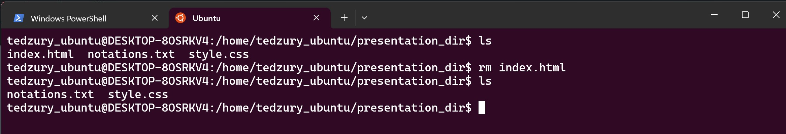
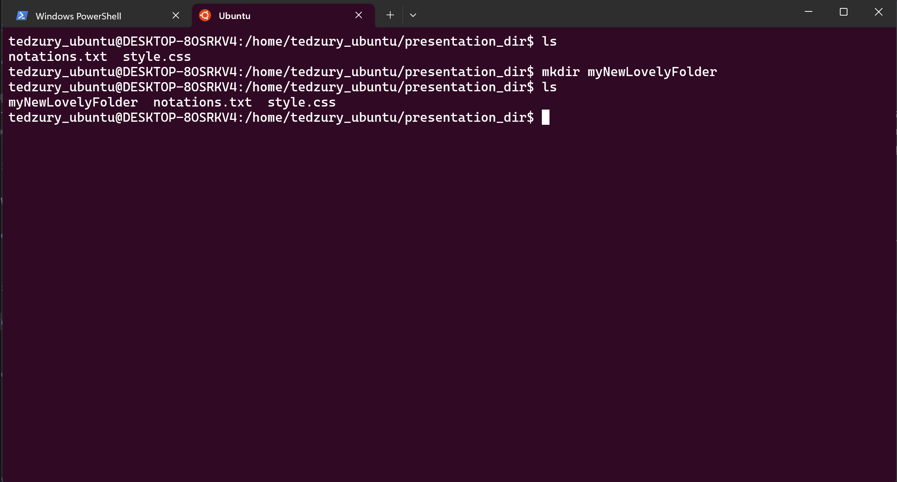
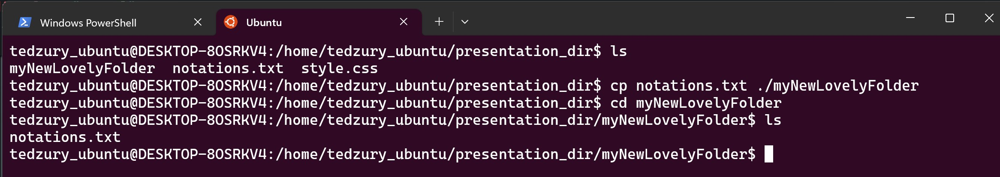

Linux logo

MacOS logo

BSD logo
Some Unix-like systems
usage in numbers:
96% of servers run on Linux
2% of servers run on BSD
17% of desktops in the world are running on Mac
Ten Essential Unix Commands
| Command | Example | Usage |
|---|---|---|
| man | man pwd | The '$man' command stands for 'manual' and it can display the in-built manual for most of the commands that we ever need. |
| pwd | pwd | The '$pwd' command stands for 'print working directory' and as the name says, it displays the directory in which we are currently. |
| cd | cd newfolder | The '$cd' command stands for 'change directory' and it changes your current directory to the 'newfolder' directory. |
| ls | ls | The '$ls' command simply displays the contents of a directory. |
| touch | touch notations.txt | The '$touch' command simply creates a file with specified name and extension. |
| Command | Example | Usage |
|---|---|---|
| cat | cat notations.txt | The '$cat' stands for concatenate. Reads data from the file and gives its content as output |
| nano | nano notations.txt | The '$nano' simply opens text file in text redactor nano. |
| rm | rm file.txt | The '$ rm ' command for removing the file. |
| mkdir | mkdir newFolder | The '$ mkdir' command creates a new folder with specified name |
| cp | cp /home/folder/notations.txt /home/anotherFolder | This '$ cp ' command stands for 'copy' and it simply copy/paste the file wherever you want to. |
The 'man' command stands for 'manual' and can display the manual for the most commands in Linux


The '$pwd' command stands for 'print working directory'. Displays the directory in which we are currently.
The '$cd' command stands for 'change directory' and it changes your current directory to any directory you specify.
The '$ls' command simply displays the contents of a directory.
The '$touch' command creates a file with specified name and extension.
The '$ nano' command with followed name of text file - open this file and allows to update it.
The '$ cat' command stands for 'concatenate'. Displays text from a text file into terminal
The '$ rm' command deletes specified file.
The '$ mkdir' creates a directory with specified name
The '$ cp' command stands for copy and needs specified target and destination to copy it
